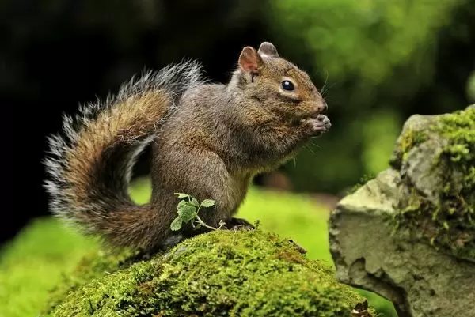
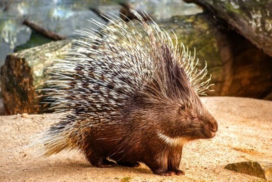
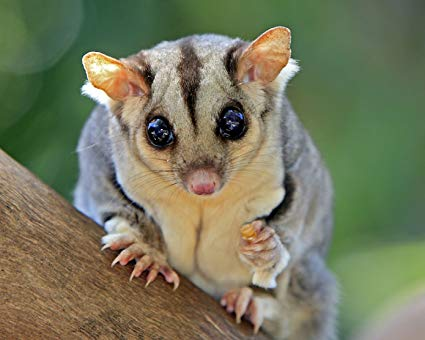

/139815703-56a006515f9b58eba4ae8b52.jpg)
Callosciurus erythraeus The colorful coat of the flanks is spread evenly from the front feet to the shoulders. Adult males have an average weight of 0.5 - 0.8kg. Adult females have an average weight of about 0.5kg. The head and body length of the red-bellied squirrel can range from 235 - 310mm, the tail length ranges from 215 - 285mm. Their tails are quite long and the mouth is quite short. The front legs are bare and the hind legs are partly exposed when walking. The features of the main pelvis are well developed and show the least variation in the red-bellied colonies in the North. The red-bellied squirrel is one of the squirrels with the most varied face shape and pattern on the body. They may have gray hair or no pattern. The lower part of the abdomen can change from white to high to chestnut brown like the color of starfruit butterflies.
These wild animals are often found in forests in India, Bhutan, Thailand, Laos, Cambodia, Malaysia, Vietnam, etc.In these areas, they are often found at altitudes below 3000m, in tropical and subtropical forests and some coniferous hills. The red-bellied squirrel is one of the major rodents that live on trees, and they are also found in secondary forests, coconut forests, mixed forests, oak forests,…
This species is often found in many different forest areas, from tropical bush areas, broadleaf forests to temperate and cold temperate cloud forests. Most of the time, the red-bellied squirrels live on trees, borrow the forks and branches to move. They are found most in dry forest areas. Some squirrels, especially Mexican red bellies, are also present in some forest areas bordering agriculture and urban areas. Their nests use small rafts that can be built above and below to form a frame, surrounded by dry leaves and grasses, and the outside looks like a bird's nest. In addition, red-bellied squirrels also use tree niches on rotten tree trunks and some trunk-shaped burrows prepared by some woodpeckers to change into squirrels..
Callosciurus erythraeus moves very quickly and flexibly, their activity time usually starting from half an hour after sunrise until noon and then starting again at the beginning of the evening. Because this is one of the wild animals, even after long contact with humans, squirrels are still shy and very elusive. Most of this species spends time on the trees, but can still see them on the ground. Weather is one of the factors that can reduce the activity of the red tummy. When they feel they are threatened, they often show aggressive behavior, making frequent cries, moving their tails forward and quickly backing away. When they feel they are threatened, they often show aggressive behavior, making frequent cries, moving their tails forward and quickly backing away. The red-bellied squirrel loves to live in the oak forests. They often focus on living in groups, active mostly in trees, good at climbing. Even on high and vertical cliffs, they can go sightseeing, often bouncing from tree branches to other trees to feed, the distance to dance can be up to 5 - 6m.
Like other tree squirrels, the red-bellied squirrel can breed year round. Mating can begin the day after the last breastfeeding. The gestation period lasts about 4 months, each litter can allow up to 4 individuals to take care of the baby, but usually only give birth to 2 children. Their peak breeding season is usually from April to May each year. At this time, the pregnancy rate of the red-bellied squirrel is usually the highest. Baby squirrels can leave the nest when they are 40-50 days old. After 1 year can be considered as an adult. This animal can live up to 17 years in captivity.
Squirrels are one of the rodents so their feeding habits are quite mixed. Callosciurus erythraeus feeds mainly on fruits or different types of plant seeds. In addition, they can also eat grass, plants and some other insects and small animals, ... For Florida populations of squirrels they are very fond of some fruits of Chiococca, tree seeds. pine and oak.
Hystricidae CThey are distributed in both the Old World and the New World. The name porcupine in Vietnamese can also refer to a number of species in the hedgehog (Erinaceomorpha) or the Tachyglossidae of the Monotremata family, which have many characteristics different from the Old World Hedgehog family and Tan The world (Erethizontidae), however, does not mention members of these ministries. After water pigs and beavers, porcupines are the third most widely distributed in Rodents. Most porcupines are 630–910 mm long with a tail of 200–250 mm long. With a weight of 5.4–16 kg, they are often curled and slow. Hedgehogs are colorful like brown, gray and rarely white.
Hedgehogs have long beaks, pointed heads, slender bodies, and longer tails than females. The beak urchin is short, the head is slightly rounded, the body is filly, the tail is shorter and fatter than the male.
>Hystricidae eat roots, sprouts, vegetables, tubers, sweet and bitter fruits ... Seldom drink water, because porcupines eat a lot of vegetables, fruits ... and especially plants with remedies for gastrointestinal problems, so the hedgehog stomach is considered to be one of the quite special parts for porcupines.
Hystricidae rarely infected, the common porcupine disease is a skin-borne parasite caused by tick bites, which causes scabies and intestinal diseases....
Hystricidae after about 8 - 10 months, reaching an average weight of 8 - 10 kg / head and start breeding. Female urchins become heat 1 - 2 days and let the male urchins breed day and night. The time to get pregnant is about 3 months then give birth, from 1 to 3 children each, usually two. Hedgehogs often lay at night. In particular, the mother urchin not only gives birth to her baby but also feeds the offspring not normally born. Mother urchins 3 days after calving are oestrus and inseminated for the next reproductive cycle.
Petaurus breviceps breviceps is a subspecies of the Petaurus breviceps native to the northeastern coast of Australia. The Australian flying squirrel is one of the four subspecies of Petaurus breviceps. They are subspecies like squirrels that live in trees and live at night. Currently they are favored as pets, a unique pet with a process of caring and nurturing these animals quite feats with a varied diet.
Adult petaurus breviceps breviceps are 18–30 cm long, including the tail, when adults can weigh up to 200g, they have an extremely soft fur with a long black stripe running the body and possesses a thin membrane extending from the center of the arm to the end of the hind legs gives them the ability to fly as far as 60 - 100 meters in a few seconds. They live in the forest. Newly born flying squirrels will automatically slip into a small pouch in front of their breasts and suckle until they become stronger. Sugar Glider is quite smart like dogs. They can remember their names if played with them often. Sugar Glider is quite gentle, they can play with domestic pets such as dogs, cats, parrots. Sugar Glider loves climbing, running and jumping. Australian flying squirrel life expectancy is quite high from 12-15 years.
Their name comes from their diet (partly they eat the nectar and wax of eucalyptus). They have a diet of live foods like Spiders, Moths, Caterpillars, Insects, Beetles, Little Birds and Eggs, Small Animals. Resin from eucalyptus leaves and eucalyptus trees. The sweetener comes from the ash tree, has a sweet taste. Aphids live in the leaves of resin with adhesive, pollen, nectar from Australian willow trees (Bottlebrush); Evergreen trees (Grevellia). In captivity, they can eat processed meats like chicken, shrimp, fish (boned), beef; Processed eggs, boiled eggs in shell; Milk / Yogurt. Natural foods like larvae, crickets, pups, insects, sap, nectar. Cat's high-class food sources that aren't hard. Fruit group (25% of fruits or vegetables in the total amount of food provided for the baby) includes fruits such as: Apple, Asian Le, Apricot, Banana, Raspberry, Grape, Guava, Plum.s
8 Ton That Thuyet, My Dinh, Tu Liem,
Ha Noi, Viet Nam.
0966469746 (Do Van Huan)
0666729716 (Nguyen Minh Nghia)
0522697743 (Duong Thanh Binh)
0849818969 (Le Van Phuong)
0373485924 (Nguyen Thanh Lam)
KawasakiZoo@gmail.com